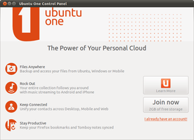
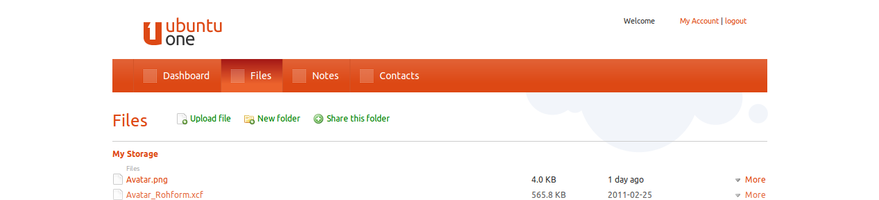
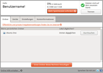

Ubuntu One Filehosting
Archivierte Anleitung
Dieser Artikel wurde archiviert, da er - oder Teile daraus - nur noch unter einer älteren Ubuntu-Version nutzbar ist. Diese Anleitung wird vom Wiki-Team weder auf Richtigkeit überprüft noch anderweitig gepflegt. Zusätzlich wurde der Artikel für weitere Änderungen gesperrt.
Anmerkung: Der ehemalige Cloud-Dienst Ubuntu One wurde zum 01. Juni 2014 eingestellt. Benutzer konnten ihre Daten noch bis 31. Juli 2014 sichern. Zu den Details siehe Das Ende von Ubuntu One. Mit dem Ubuntu One Downloader  stand ein Kommandozeilenwerkzeug zur Verfügung, um noch auf U1 vorhandene Dateien in einem Rutsch herunterladen zu können.
stand ein Kommandozeilenwerkzeug zur Verfügung, um noch auf U1 vorhandene Dateien in einem Rutsch herunterladen zu können.
Ubuntu One dient seitdem nur noch zur zentralen Registrierung und Anmeldung (Single Sign On für Software-Center, Launchpad und Ubuntu Touch).
Zum Verständnis dieses Artikels sind folgende Seiten hilfreich:
Mit Ubuntu One bot Canonical einen Cloud-Dienst zur Datenspeicherung im Internet an, der im Mai 2009 seinen Dienst aufgenommen hat. Dieser Dienst stand jedem Benutzer von Ubuntu zur Verfügung. Die Übertragung der Daten erfolgte dabei verschlüsselt per SSL. Canonical wolte diesen Dienst zwar in Zukunft ausbauen, nach knapp sechs Jahren hat man sich im April 2014 allerdings entschieden, Ubuntu One einzustellen.
|  |
| Ubuntu One |
Früher umfasste Ubuntu One:
Ubuntu One Basic (Onlinespeicher 5 GiB kostenlos) – mehr Speicherplatz konnte käuflich erworben werden
Onlinefreigabe von Dateien
Gemeinsame Benutzung von Dateien
Thunderbird Filelink
 (ab Thunderbird 15 oder neuer)
(ab Thunderbird 15 oder neuer)Onlinezugriff per Browser auf das Konto
Ubuntu One arbeitete im Hintergrund und hielt die vom Benutzer freigegebenen Datenbestände auf den angemeldeten Computern synchron. Damit wurden diese Daten nicht mehr nur lokal gespeichert, sondern auch auf einem externen Server – mit allen Vor- und Nachteilen. Die entsprechenden Informationen zum Datenschutz sind in der Privacy Policy auf der Homepage von Ubuntu One hinterlegt.
Ubuntu One war am besten in das Kernprodukt Ubuntu mit der Desktop-Oberfläche Unity integriert. Aber auch mit anderen Desktop-Umgebungen konnte den Cloud-Dienst komfortabel genutzt werden.
Installation¶
Zur Benutzung wird ein Konto beim Ubuntu Single Sign On - Dienst benötigt. Hier kann ein bestehendes Konto verwendet oder ein neuer Zugang angelegt werden. Dieses Konto kann auch für andere Dienste und Seiten, z.B. Launchpad benutzt werden.
Ab Ubuntu 10.04 bis einschließlich 13.10 war Ubuntu One bereits vorinstalliert. Ansonsten kann es aus den Paketquellen installiert [1] werden:
ubuntuone-client
ubuntuone-client-gnome
ubuntuone-control-panel
ubuntuone-control-panel-gtk (bis Ubuntu 12.04)
 mit apturl
mit apturl
Paketliste zum Kopieren:
sudo apt-get install ubuntuone-client ubuntuone-client-gnome ubuntuone-control-panel ubuntuone-control-panel-gtk
sudo aptitude install ubuntuone-client ubuntuone-client-gnome ubuntuone-control-panel ubuntuone-control-panel-gtk
Optional sind außerdem folgende Pakete verfügbar:
ubuntuone-control-panel-qt (ab Ubuntu 12.04 )
evolution-couchdb (Evolution-Kontakte synchronisieren, bis Ubuntu 12.04)
desktopcouch-ubuntuone (Erweiterung für CouchDB)
mit apturl
Paketliste zum Kopieren:
sudo apt-get install ubuntuone-control-panel-qt evolution-couchdb desktopcouch-ubuntuone
sudo aptitude install ubuntuone-control-panel-qt evolution-couchdb desktopcouch-ubuntuone
Bedienung¶
Nach Abschluss der Installation kann der Dienst über "System -> Einstellungen -> Ubuntu One" gestartet werden.
Autorisierung¶
Als Nächstes muss der Computer mit dem Dienst autorisiert werden. Beim Start des Programms öffnet sich die Webseite von Ubuntu One. Bei der erstmaligen Anmeldung geht man über "Subscribe -> Ubuntu One Basic (Free)", um 5 GiB Onlinespeicherplatz kostenlos nutzen zu können. Um den eigenen Computer mit diesem Zugang zu verbinden, klickt man auf der Website auf die Schaltfläche "Add this Computer". Klappt das nicht, dann bitte diesen Abschnitt weiter unten ausprobieren.
Im Einstellungsdialog von Ubuntu One (auf dem eigenen Rechner) den Reiter "Geräte" öffnen und mit dem Computer die "Verbindung herstellen" (falls nicht automatisch erfolgt).
| Synchronisiert | Synchronisierung | nicht synchronisiert |
Ubuntu One¶
Die folgenden Seiten können über Ubuntu One aufgerufen werden – dies kann teilweise direkt über das Webinterface geschehen.
| Ubuntu One | |
| Reiter | Beschreibung |
| "Konto" | Über "Konto verwalten" können die Zugangsdaten geändert werden. |
| "Gerät" | Computer hinzufügen, entfernen und Verbindungen unterbrechen bzw. (neu)starten. |
| "Dienste" | Zur Synchronisation freigegebene Dienste festlegen. |
Homeverzeichnis¶
Per Drag and Drop können die zu synchronisierenden Daten mit dem Dateimanager im Ordner ~/Ubuntu One eingefügt werden. Möchte man weitere Ordner freigeben, so führt man einen Rechtsklick  aus und wählt im sich öffnenden Menü den Punkt "Mit Ubuntu One synchronisieren" an. Um dies rückgängig zu machen, erneut einen Rechtsklick ausführen und "Synchronisierung mit Ubuntu One beenden" anwählen.
aus und wählt im sich öffnenden Menü den Punkt "Mit Ubuntu One synchronisieren" an. Um dies rückgängig zu machen, erneut einen Rechtsklick ausführen und "Synchronisierung mit Ubuntu One beenden" anwählen.
Statussymbole informieren den Nutzer über die Vorgänge.
Synchronisation von Programmeinstellungen¶
Für einige Programme ist es sinnvoll, die Einstellungen computerübergreifend synchronisieren zu können.
Experten-Info:
| Erfolgreich getestete Programme | ||
| Programm | Verzeichnis | Auswirkungen |
| Pidgin | ~/.purple | Synchronisiert IM-Konten, Blacklists, Statusvorlagen und Nachrichtenverläufe. |
Hinweis:
Es sollte darauf geachtet werden, dass vor der ersten Synchronisation stets eine Sicherung der zu synchronisierenden Daten vorgenommen wird, da einige Programme durch Fehler bei der Synchronisation nicht mehr (richtig) starten.
Achtung!
Vorsicht bei Firefox, Seamonkey und Thunderbird – hier muss zuerst der Cache ausgelagert werden, sonst werden diese temporären Daten synchronisiert.
Dateifreigabe¶
Dateien aus den zu synchronisierenden Ordnern können ebenfalls mittels eines Rechtsklicks aus dem Ordner ~/Ubuntu One direkt freigegeben werden. Hier "Über Ubuntu One veröffentlichen" anwählen. Über einen erneuten Rechtsklick auf die freigegebene Datei kann man mit "Öffentliche Ubuntu-One-Adresse kopieren" diese in Erfahrung bringen und verwenden. Über die Option "Veröffentlichung über Ubuntu One beenden" wird die Aktion rückgängig gemacht.
Dies kann ebenfalls über das Webinterface erfolgen.
|  |
| Web-Oberfläche |
Web-Oberfläche¶
Auf die eigenen Datenbestände hat man über das Web-Oberfläche jederzeit Zugriff. Hinter "Files" können die synchronisierten Daten eingesehen, freigegeben und gelöscht werden. Diese Funktionen erreicht man über die Schaltfläche "More" am rechten Rand neben der jeweils ausgewählten Datei. Über  "Upload file" können Daten hochgeladen werden. Zur optischen Unterteilung werden u.a. Ordner und Musikdateien anders dargestellt.
"Upload file" können Daten hochgeladen werden. Zur optischen Unterteilung werden u.a. Ordner und Musikdateien anders dargestellt.
Kontakte, welche aus Evolution übermittelt wurden, findet man unter "Contacts".
Verschlüsselung¶
Mit Hilfe von EncFS lassen sich vertrauliche Daten ordnerweise verschlüsseln, bevor sie auf dem Ubuntu-One-Server abgelegt werden (um nur einzelne Dateien zu verschlüsseln, siehe Daten verschlüsseln).
Sowohl das Erstellen eines neuen verschlüsselten Verzeichnisses als auch das spätere Einhängen kann mit dem folgenden Befehl erfolgen:
encfs ~/Ubuntu\ One/.encrypted ~/Ubuntu\ One\ Encrypted
Es werden zwei Verzeichnisse angelegt (zweimal mit Y bestätigen, auch wenn man in der deutschen Version dazu aufgefordert wird J zu drücken! Siehe Beitrag im Forum). In das Verzeichnis ~/Ubuntu One Encrypted können die vertraulichen Dateien abgelegt werden. Das Verzeichnis ~/Ubuntu One/.encrypted enthält dann die verschlüsselten Versionen und wird mit dem Ubuntu-Server synchronisiert.
Beim Einhängen wird jedes Mal das Passwort für das verschlüsselte Verzeichnis abgefragt. Will man das automatisieren, sodass mit jedem Systemstart das Verzeichnis sofort gemountet wird, kann man dazu ein kleines Skript erstellen. Diese Lösung für das automatische Mounten stammt aus dem Forum:
#!/bin/bash echo 'passwort' | encfs -S ~/Ubuntu\ One/.encrypted ~/Ubuntu\ One\ Encrypted
Das Skript wird dann z.B. im Homeverzeichnis abgespeichert und bei jedem Start automatisch ausgeführt. Zu beachten ist, dass das Passwort im Klartext im Skript steht. Der Anwender muss für sich selbst entscheiden, ob das für ihn akzeptabel ist.
Problembehebung¶
Keine Verbindung bei Verwendung von NoScript¶
Nutzer des Firefox-Addons NoScript können bei der Ersteinrichtung Probleme durch die "ABE"-Funktion (= Application Boundaries Enforcer) bekommen. Um das Problem zu lösen, ohne die Funktion zu deaktivieren, muss man die SYSTEM ABE Regeln ("NoScript-Einstellungen -> Erweitert -> ABE") in Folgendes ändern:
# Prevent Internet sites from requesting LAN resources. Site LOCAL Accept from LOCAL Site one.ubuntu.com Accept Deny
Keine Synchronisation mit dem Ubuntu One-Account¶
Fehlerbild: Meldung "Synchronisation abgeschlossen", aber Dateien wurden nicht ausgetauscht, verglichen oder ergänzt.
Lösung: Ubuntu One komplett deinstallieren. Dabei muss der Ordner ~/Ubuntu One im Homeverzeichnis nicht gelöscht werden. Das Profil sowie die Konfigurationsdateien von Ubuntu One sollte man dagegen löschen. Finden kann man diese Konfigurationsdateien mit dem Befehl [2]:
find ~ -iname ubuntuone
die Ausgabe sollte dann ungefähr so aussehen:
/home/BENUTZER/.cache/ubuntuone /home/BENUTZER/.config/ubuntuone /home/BENUTZER/.local/share/ubuntuone
Die jeweiligen Ordner aufrufen und den jeweiligen Unterordner ubuntuone löschen (siehe auch versteckte Dateien). Dies kann auch mit folgendem Befehl erfolgen:
rm -rf ~/.cache/ubuntuone ~/.config/ubuntuone ~/.local/share/ubuntuone
Danach kann man sich über one.ubuntu.com anmelden und unter Account seinen erkannten Rechner, falls vorhanden, löschen. Nun muss noch der/die eventuell erstellte Schlüssel unter "Anwendungen -> Zubehör -> Passwörter und Verschlüsselung" bzw. "System -> Einstellungen -> Passwörter und Verschlüsselung" gelöscht werden. Der zu entfernende Eintrag lautet: UbuntuOne token for https://ubuntuone.com.
Nun folgt ein Neustart von Ubuntu. Ubuntu One neu installieren und danach die Anwendung erneut starten. Es wird nun der Browser geöffnet, um sich anzumelden. Anschließend den Rechner wieder zum eigenen Account hinzufügen. Nach einer kurzen Wartezeit werden die Dateien im Ordner ~/Ubuntu One mit dem Account synchronisiert.
Upgrade auf 12.04 LTS¶
Nach der Aktualisierung auf Ubuntu 12.04 erfolgt beim Ubuntu-One-Aufruf keine Verbindung zum Server mehr. Nach einigen Minuten erscheint eine Fehlermeldung. Unter "Details" sieht man nur die lapidare Meldung: "IPC error" (Interprozesskommunikationsfehler). Dieses Problem tritt vermutlich auf, wenn der Synchronisationsprozess (mit der Einstellung "Dienst beenden" in 11.10) beim Upgrade gestoppt war.
Als Lösung kann man das Profil sowie die Konfigurationsdateien von Ubuntu One löschen. Ermitteln kann man diese Konfigurationsdateien mit dem Befehl [2]:
find ~ -iname ubuntuone
Die Ausgabe sollte dann ungefähr so aussehen:
/home/BENUTZER/.cache/ubuntuone /home/BENUTZER/.config/ubuntuone /home/BENUTZER/.local/share/ubuntuone
Die jeweiligen Ordner aufrufen und den jeweiligen Unterordner ubuntuone löschen (siehe auch versteckte Dateien). Dies kann auch mit folgendem Befehl erfolgen:
rm -rf ~/.cache/ubuntuone/* ~/.config/ubuntuone/* ~/.local/share/ubuntuone/*
Anschließend von der Desktop-Sitzung abmelden und neu anmelden. Beim neuen Aufruf von Ubuntu One wird die Clientinstallation (eigentlich nur: das Erstellen der Konfiguration) gestartet. Anschließend funktioniert Ubuntu One wieder normal. Evtl. müssen die Einstellungen kontrolliert und angepasst werden, da sie gelöscht worden sind.
Computer kann nicht hinzugefügt werden¶
Sofern der Computer immer noch nicht hinzugefügt werden kann, unter "System -> Einstellungen -> Passwörter und Verschlüsselung" eventuell hinterlegte Zugangsdaten löschen und im Terminal den folgenden Befehl ausführen:
killall ubuntuone-login ubuntuone-syncdaemon
Anschließend den Computer erneut anmelden.
Ubuntu One-Leiste aus Nautilus entfernen¶
Die Leiste kann zwar nur ordnerweise ausgeblendet werden, aber diese Lösung kann trotzdem sinnvoll sein, falls man den entsprechenden Ordner definitiv nicht synchronisieren möchte. Siehe How to disable the Ubuntu One file manager ribbon for specific folders?
KDE¶
Die KDE-Integration lässt schon seit Kubuntu 12.04 fast nichts mehr zu wünschen übrig. Um Ubuntu One zu installieren, braucht man nur folgendes Paket (siehe auch Xfce):
ubuntuone-control-panel-qt
mit apturl
Paketliste zum Kopieren:
sudo apt-get install ubuntuone-control-panel-qt
sudo aptitude install ubuntuone-control-panel-qt
Seit Kubuntu 12.10 lässt sich Ubuntu One unter KDE auch hinter einem Proxy-Server (z.B. in einer Firma) nutzen.
ubuntuone-client-proxy
mit apturl
Paketliste zum Kopieren:
sudo apt-get install ubuntuone-client-proxy
sudo aptitude install ubuntuone-client-proxy
Die Proxy-Einstellungen können über den dconf-editor oder via Kommandozeile über gsettings vorgenommen werden. Beispiel:
gsettings set org.gnome.system.proxy mode 'manual' gsettings set org.gnome.system.proxy.http host 'proxy.localdomain.com' gsettings set org.gnome.system.proxy.http port 8080 gsettings set org.gnome.system.proxy.https host 'proxy.localdomain.com' gsettings set org.gnome.system.proxy.https port 8080
Um ein Plugin für Ubuntu One in Dolphin zu integrieren, wie man es aus Nautilus kennt, kann man das Ubuntu One Dolphin Plugin verwenden.
Xfce¶
 Um Ubuntu One unter Xfce nutzen zu können, installiert man sich über das folgende Paket [1] ein Client-Programm mit grafischer Oberfläche (GUI):
ubuntuone-control-panel-qt
mit apturl
Paketliste zum Kopieren:
sudo apt-get install ubuntuone-control-panel-qt
sudo aptitude install ubuntuone-control-panel-qt
Anschließend kann man den Ubuntu One-Client über den Befehl:
ubuntuone-control-panel-qt --with-icon
starten. Eine weitere Integration, beispielsweise in den Dateimanager Thunar, ist nicht vorhanden. Dieser Befehl kann auch als Autostart-Eintrag dienen. Allerdings muss man bei der Zeile Exec=... der anzulegenden .desktop-Datei tricksen, um Parameter übergeben zu können. Im folgenden Beispiel wird statt --with-icon die Option --minimized verwendet, um das Programm im Hintergrund zu starten. Beispiel:
[Desktop Entry] Name=Ubuntu One Control Comment=Configure and manage your Ubuntu One account Comment[de]=Verwaltung des Ubuntu-One-Kontos Exec=sh -c "ubuntuone-control-panel-qt --minimized" Icon=ubuntuone-installer Terminal=false Type=Application Categories=GNOME;GTK;Settings;DesktopSettings;X-GNOME-Settings-Panel;X-GNOME-PersonalSettings StartupNotify=true X-Ayatana-Appmenu-Show-Stubs=False X-GNOME-Settings-Panel=ubuntuone
Dieser Textblock kann z.B. als ~/.local/share/applications/ubuntuone-control.desktop gespeichert werden (für einen automatischen Start zusätzlich als ~/.config/autostart/ubuntuone-control.desktop). Anschließend steht das Programm über "Einstellungen -> Ubuntu One Control" zur Verfügung. Siehe auch:
Links¶
FAQ - Häufig gestellte Fragen und Antworten
Downloads:
Status:
Setting up Ubuntu One on Ubuntu 10.04 LTS
- Video-TutorialUbuntuforums.com - Ubuntu One
- Unterforum ubuntuforums.orgCanonical startet neuen Dienst - Ikhaya-Artikel 05/2009
Forenthread: Ubuntu One Referrals - Gratis-Speicher für die Community
Fremd gehostete Dienste
 - Podcast 07/2009
- Podcast 07/2009Ubuntu_One - Wikipedia
Cloud-Dienste
 Übersichtsartikel
Übersichtsartikel
- Erstellt mit Inyoka
-
 2004 – 2017 ubuntuusers.de • Einige Rechte vorbehalten
2004 – 2017 ubuntuusers.de • Einige Rechte vorbehalten
Lizenz • Kontakt • Datenschutz • Impressum • Serverstatus -
Serverhousing gespendet von